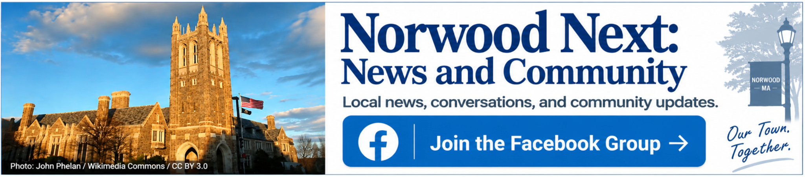

Loading upcoming events…
See all events today & upcoming →Planning an event?Try the Conflict Contraption →
NORWOOD, MASSACHUSETTS
Discover events, local news, places to go and useful resources from across Norwood.
NORWOOD TODAY
LIVE TRANSIT
Tap a bus, train or station for live details.
Open detailed transit →AROUND TOWN
Learn more →LOCAL REPORTING
Current reporting from local and regional sources.
Loading bundled headlines…EXPLORE NORWOOD
Local favorites in Norwood, plus a few worthwhile nearby destinations.
